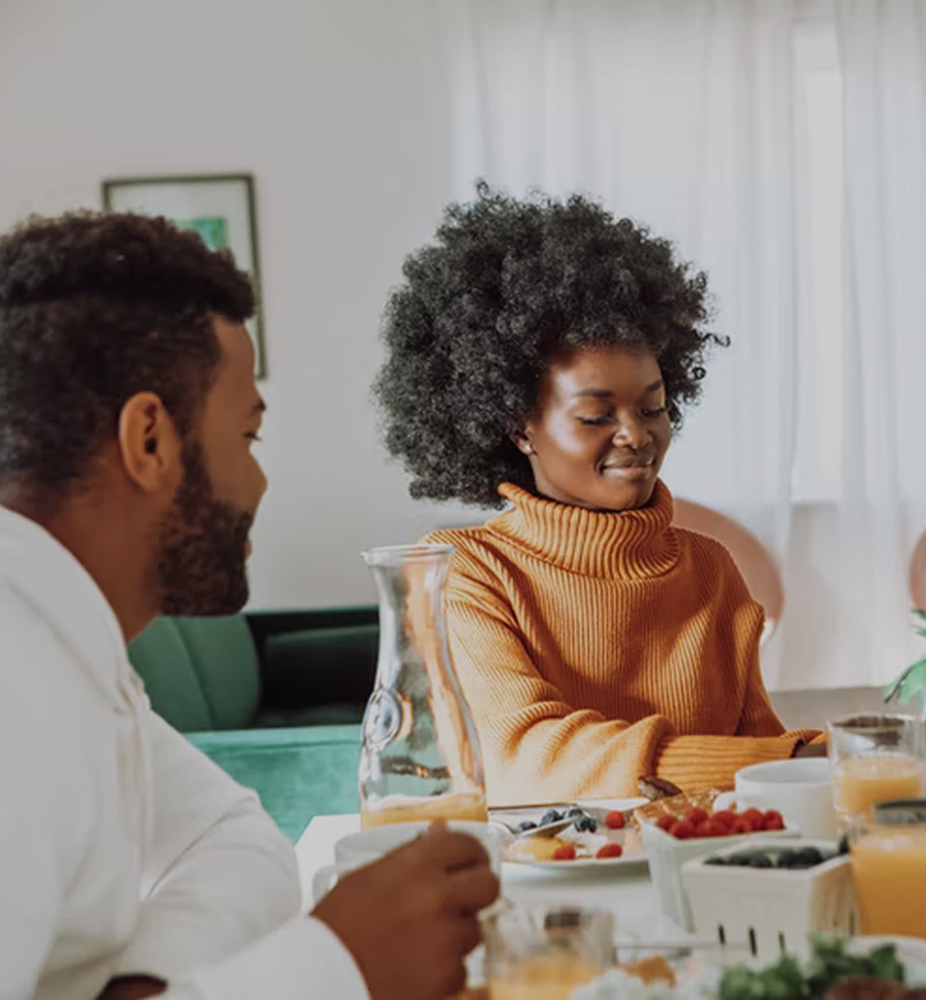
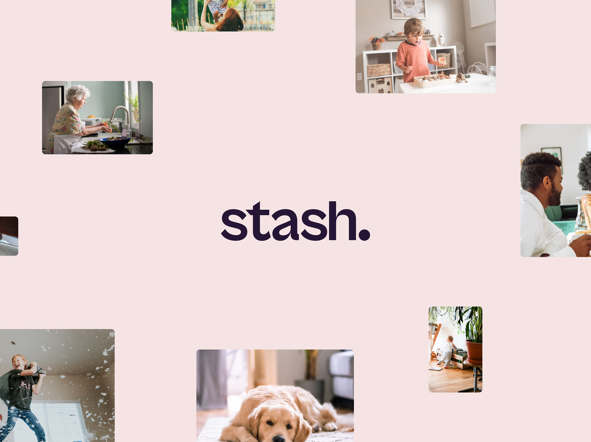
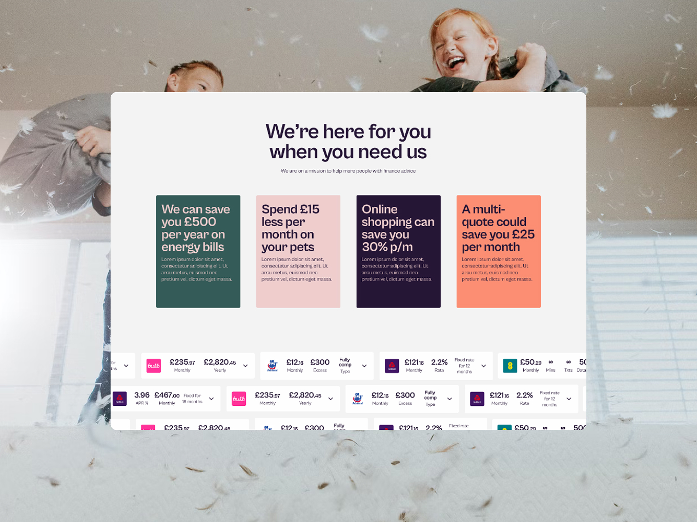
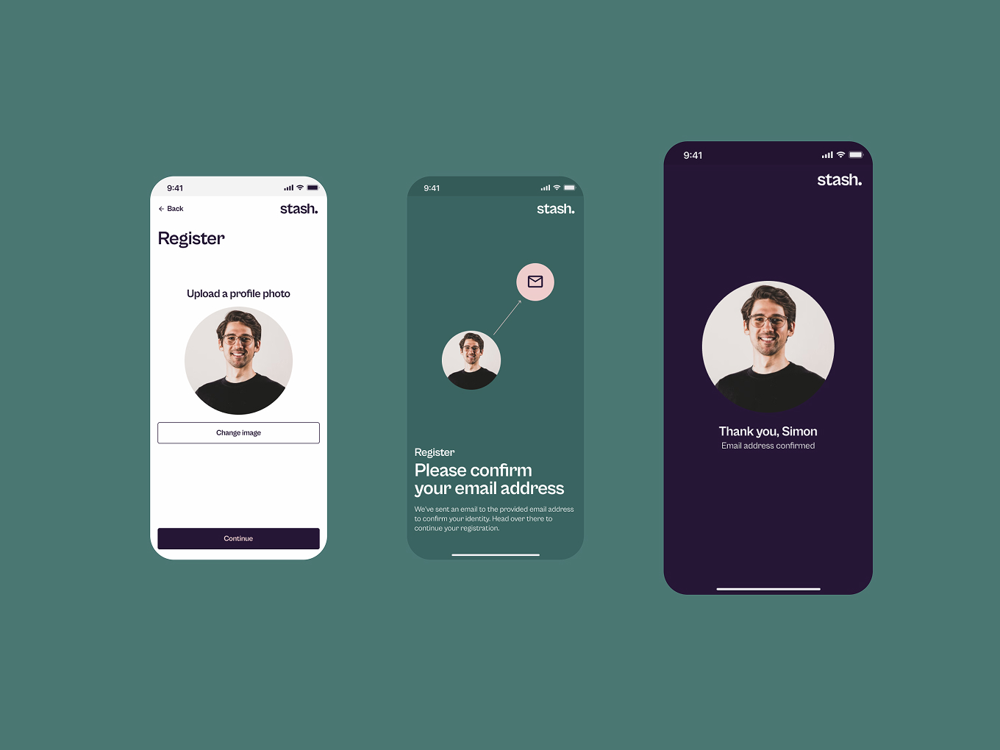
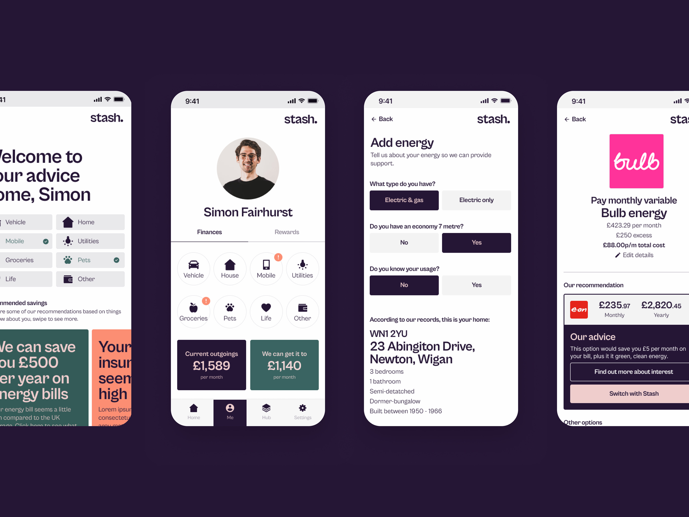
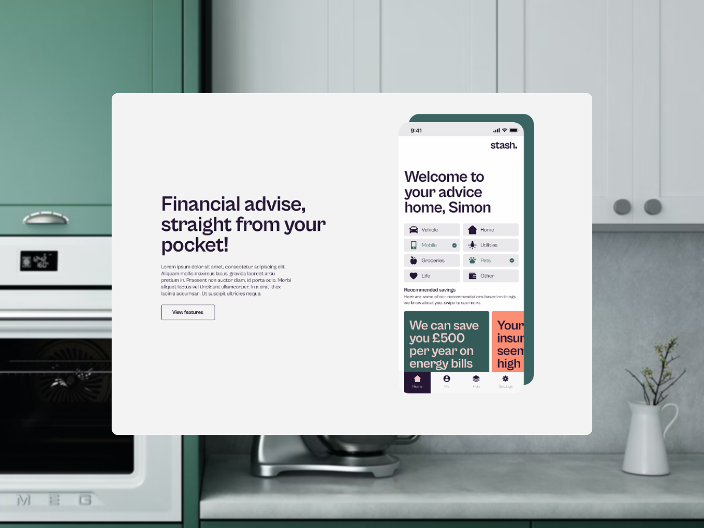
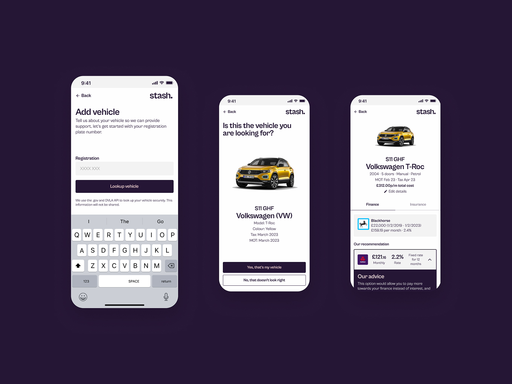
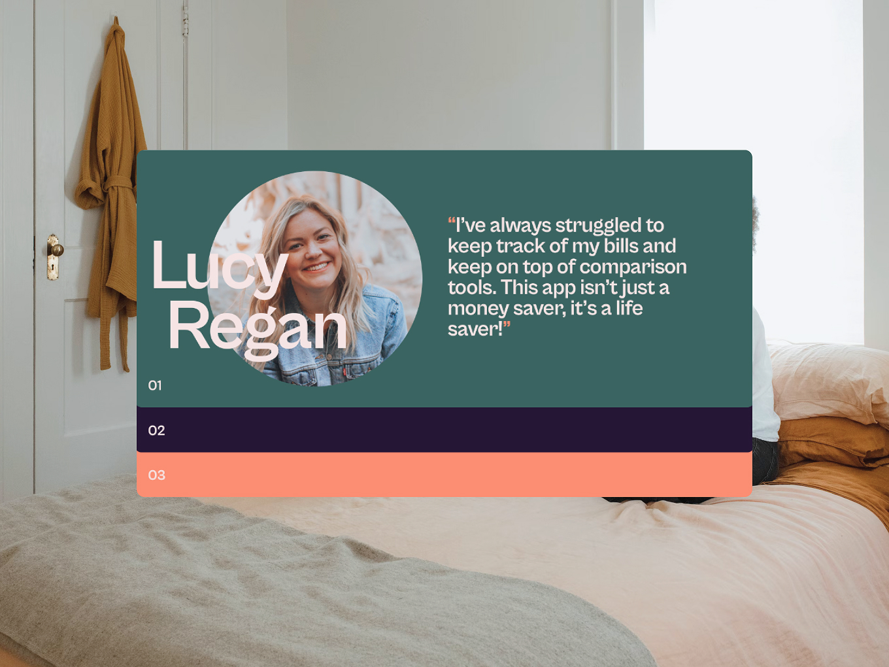
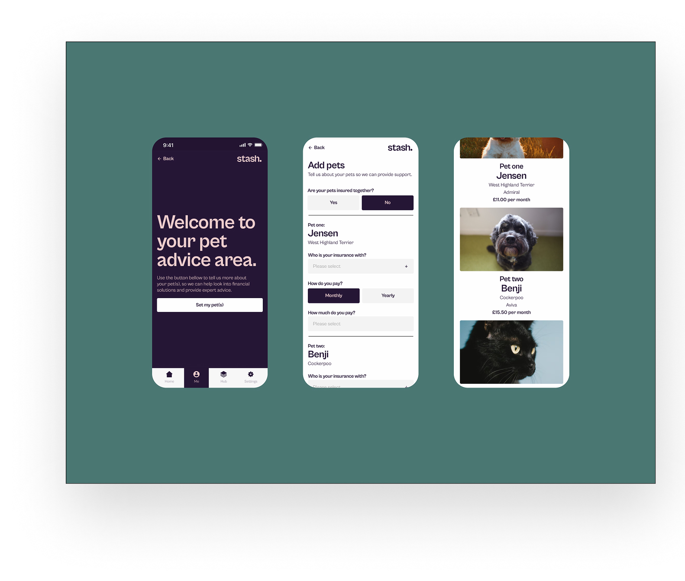

Stash Finance
Finance That Already Knows You
Stash is a fintech app I built from a blank page for MoneyPlus, a UK financial advisory business that wanted to turn its large database of financial information into a product for a completely new audience. The brief was to invent a sister brand from scratch, name, identity, tone of voice and a working app, that could hold its own against fintech competitors while still being trustworthy enough to hand over your bills.
Results
- +40% increase in action intent vs traditional finance journeys
- Up to 30% estimated annual saving opportunity per user
- IA and design system built to scale across the wider MoneyPlus ecosystem
- Full brand and product built in a 6 week sprint

The Challenge
MoneyPlus's usual audience skewed older and less tech-savvy, but the CEO wanted to reach a younger, more digitally fluent group who wouldn't touch a traditional advisory brand. That meant starting with nothing: no name, no identity, no product, just a database of financial information and six weeks to turn it into something people would trust with their bills, their car finance and their insurance. It also had to stand apart from MoneyPlus, distinct enough to win that audience on its own terms, while still working alongside it as a partner brand rather than a rival. Get the tone wrong and it reads as another faceless fintech, get it too casual and nobody trusts it with their money.


The Approach
A discovery workshop and four user personas, from a bill-cutter to an older user just checking he wasn't overpaying, made the case for structuring the product around real-life categories (vehicle, home, utilities, telecoms, groceries, pets) rather than one generic dashboard, and I built the full app in greyscale first to pressure-test that IA before any visual treatment went near it.
The key product decision was what it ran on: rather than asking users to manually enter their bills and policies, it pulled from MoneyPlus's own customer data, so the app could generate live comparisons and recommendations automatically, a financial assistant rather than a form to fill in. The vehicle journey became the reference flow for that model: look up your reg, confirm the car, get a direct comparison of what you're paying versus what you could switch to, backed by a KnowledgeHub for anyone who wanted the reasoning before acting. I also designed the marketing site to sell the app itself.

The Outcome
The results validated the core bet: giving users a live comparison instead of a form to fill in got them to act, and the trust that came from Stash knowing their situation already, rather than asking them to prove it, carried through in testing. The IA and design system were built with headroom from day one, so MoneyPlus could extend Stash into new categories without a redesign.


Reflection
Stash is the project I point to when someone asks if I can build a brand and a product at the same time under real pressure. Six weeks from nothing to a full identity, a working app and a scalable system only worked because I ran brand and UX in parallel, not handed off in sequence.

